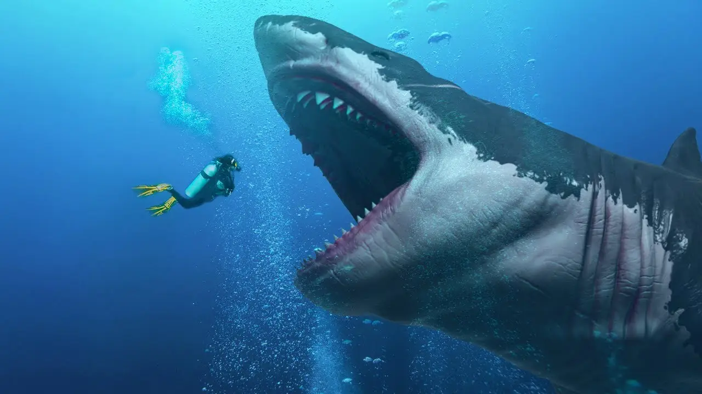

<!DOCTYPE html>
<html lang="fa" dir="rtl">
    <head>
        <meta charset="UTF-8">
        <link rel="stylesheet" href="style2.css">
        <meta name="viewport" content="width=device-width, initial-scale=1.0">
    </head>
    <title>کوسه ها </title>
    </html>
    <body>

        <div class="hen">
            <h1>&#129416;
              کوسه ها چه موجوداتی هستند؟! &#129416;
            </h1> <br><br>

            

            <h2>سوالاتی که در ادامه به آن میپردازیم</h2> <br>
               
           
            <ul>
               <div class="ben">
                <li>ویژگی انها چیست؟</li> |
                <li>نحوه تخم گذاری انها چگونه است؟</li> |
                <li>عمر انها چند سال است؟</li> |
                <li>نژادشان چیست؟</li> 
                |
            </ul>
            <br><br>
          </div>
          </div>
          <div class="jek">
            <h2><mark>درباره انها :</mark></h2>
         
            <p>آنها نخستین بار بیش از ۴۰۰ میلیون سال پیش شکل گرفتند و در ۱۰۰ میلیون سال اخیر به ندرت دستخوش تغییر و دگرگونی شده‌اند. امروزه کمتر گونه‌ای از موجودات کرهٔ زمین چنین احترام و ترسی را بر می‌انگیزد.

                این شکارچیان حیرت‌انگیز با خوردن موجودات ضعیف و زخمی، در بالای چرخه غذایی دریایی قرار می‌گیرند. آنها با این کار به حفظ تعادل در سیستم طبیعت کمک می‌کنند.از معروفترین کوسه‌ها می‌توان به کوسه بزرگ سفید، کوسه ببری و کوسه سرچکشی اشاره کرد.</p>
        <br><br> <h2><mark>ویژگی آنها چیست؟</mark></h2>
        <p>کوسه‌ها دستگاه هایی هستند که برای شکار تنظیم شده‌اند. <br>
             آنها که متکی به حس شنوایی ویژه اشان برای گرفتن شکار هستند، می‌توانند لرزش صدا را در فاصله‌ای بیش از ۳،۰۰۰ پا تشخیص دهند. <br>
               کوسه‌ها به ویژه به لرزشهای با بسامد پایین که از سوی شکار پخش می‌شوند، حساسند. لرزش صدای بلندگوها که مانند صدای ماهی زخمی است، کوسه‌ها را به حالت دیوانگی و از خود بیخودشدگی می‌برد. <br>
                هرچه که کوسه به شکار نزدیک‌تر می‌شود، حس بویایی‌اش بیشتر به کار می‌افتد. کوسه‌ها می‌توانند یک قطرهٔ خون را در ۲۵ گالن آب تشخیص دهند.</p>
           <br><br><h2><mark>نحوه تخم گذاری آن ها چگونه است</mark></h2> <br>
           <p>کوسه‌ها دو نوع تولیدمثل دارن:.</p>
           <ol>
            <li>تخم گذار</li>
            <li>زنده زا</li>
           </ol>
           <h3>نوع تخم گذار:</h3>
           <p>کوسه‌های تخم‌گذار، تخم‌های خود را داخل کپسول‌های محکم چرمی به نام تخم‌کیسه دریایی می‌گذارند که به گیاهان دریایی، صخره‌ها یا بستر دریا چسبانده می‌شوند. <br>
             داخل تخم، جنین کوچک با مواد غذایی کافی رشد می‌کند و پس از چند هفته تا چند ماه، کوسه جوان کامل از تخم بیرون می‌آید. <br>
              تخم‌ها مقاوم به شکار و شرایط محیطی هستند و معمولاً تعداد کمی از آن‌ها گذاشته می‌شود، اما شانس بقا نسبتاً بالاست چون تخم‌ها محافظت شده‌اند.</p>
              <br> <h3>نوع زنده زا :</h3>
              <p>کوسه‌های زنده‌زا (Viviparous) جنین‌های خود را داخل بدن مادر رشد می‌دهند و بچه‌ها زنده و آماده به دنیا می‌آیند. <br>
                 جنین‌ها در رحم مادر با جفت یا زرده تخم تغذیه می‌شوند و بسته به گونه، ممکن است مادر از طریق مایع یا حتی خوردن تخم‌های دیگر تغذیه اضافی کند. <br>
                  تعداد بچه‌ها معمولاً کم است اما شانس بقا بالاست چون از همان ابتدا محافظت شده و آماده زندگی مستقل هستند.</p>
              <br><br><h2><mark>عمر انها چند سال است؟</mark></h2> <br>
              <p>
                اگر بخواهیم نگاهی دقیق‌تر به این قضیه داشته باشیم، احتمال دارد در حال حاضر و در اعماق اقیانوس، کوسه‌هایی زندگی کنند که زمانی‌ که اولین مهاجران پا بر امریکا گذاشتند یا وقتی که اسحاق نیوتون نظریه گرانش را ارائه کرد، آن‌ها در حال شنا کردن در اقیانوس بودند. <br>
                 یک بررسی از ۲۷ کوسه ماده گرین‌لند نشان داد که قدیمی‌ترینِ آن‌ها حداقل ۲۷۲ سال داشت، این کوسه می‌تواند تا ۵۱۲ سال عمر کند، با این کشف می‌توان این نوع کوسه‌ها را مهره‌دارانی با طولانی‌ترین مدت عمر دانست.</p>
               <br><br><h2><mark>نژادشان چیست ؟</mark></h2> <br>
               <p>کوسه‌ها بیش از ۵۰۰ گونه دارند و در خانواده‌های مختلف تقسیم می‌شوند. <br>
                 یکی از معروف‌ترین گروه‌ها کوسه سفید بزرگ است که شکارچی قدرتمند اقیانوس‌هاست. <br>
                  گروه دیگر کوسه ببری است که همه‌چیزخوار و بسیار کنجکاو است. کوسه چکشی با سر عجیب پهن خود شناخته می‌شود و برای شکار از میدان دید وسیعش استفاده می‌کند. <br>
                   کوسه نهنگی بزرگ‌ترین ماهی جهان است اما کاملاً بی‌خطر و فیلترخوار است. کوسه پلنگی و کوسه گورخری ظاهر خال‌دار دارند و معمولاً آرام‌ترند. <br>
                    کوسه ماکو سریع‌ترین کوسه دنیاست. کوسه پرستار بیشتر شب‌فعال است و کف دریا زندگی می‌کند. <br>
                     کوسه ببر شنی نوزادها را زنده به دنیا می‌آورد و ظاهر دندان‌دار ترسناکی دارد. <br>
                      گروه دیگر، کوسه‌های ریفی هستند که در اطراف صخره‌های مرجانی زندگی می‌کنند. <br>
                       در کنار این‌ها کوسه‌های گربه‌ای معمولاً کوچک، آرام و تخم‌گذارند و تخم‌هایشان به شکل کیف دریایی است.</p>
                       <br><br><h2><mark>سخن پایانی :</mark></h2>
                       <p>در نهایت، کوسه‌ها نه هیولاهای دریا، بلکه نگهبانان پنهان اقیانوس‌ها هستند. هر کدام با شیوه‌ای شگفت‌انگیز از زندگی و تولیدمثل، نقشی مهم در تعادل طبیعت بازی می‌کنند. شناختن آن‌ها کمک می‌کند تا به جای ترس، با احترام بیشتری به این موجودات باشکوه نگاه کنیم و ارزش حضورشان را در جهان آبی بهتر درک کنیم.</p>
                       
                       <br><br><br><br><br>
                       <div class="rating">
                        <input type="radio" id="star5" name="rate">
                        <label for="star5">★</label>
                      
                        <input type="radio" id="star4" name="rate">
                        <label for="star4">★</label>
                      
                        <input type="radio" id="star3" name="rate">
                        <label for="star3">★</label>
                      
                        <input type="radio" id="star2" name="rate">
                        <label for="star2">★</label>
                      
                        <input type="radio" id="star1" name="rate">
                        <label for="star1">★</label>
                      </div>
                      
                      </div> <br>
             
                      


    </body>
